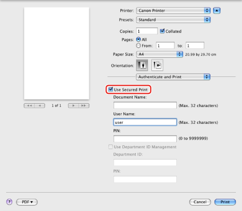
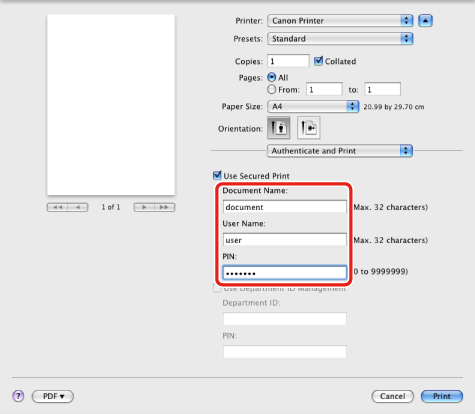

You can store a document with a certain user name and password in the printer. To print a stored document, enter the password via Remote UI or by using the control panel of the printer.
This feature is useful for printing confidential documents.
1.
From the [File] menu of the application software, select [Print].
The [Print] dialog box is displayed.
2.
The [Authenticate and Print] preferences pane is displayed.
3.
Select [Use Secured Print].

4.
Enter the document name, user name, and password.

5.
Click [Print].